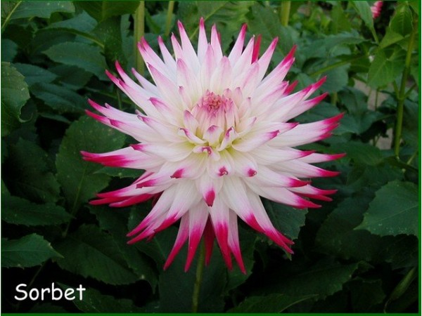

Bol- en knolgewassen
Ik start dit eerste jaar met een mengsel van verschillende dahlia’s. Dahlia’s bloeien tot ver in het najaar en de grote bloemen zijn mooi in een plukboeket. Er is een enorme hoeveelheid dahliasoorten te koop. Verdiep je eens in de webshops welke deze verkopen.
Ik heb gekozen voor de volgende soorten en hoop je dit jaar nog het resultaat te kunnen laten zien:
- Sweet Love, roze decoratief
- White Alva, prachtige wit decoratief
- Moor Place, een purple pompon
- Oreti Duke, een purple pompon
- Sorbet, een prachtige spin met purple punten
- Dahlia Sorbet - ideale bloem voor in een pluktuin en plukboeket
- Dahlia Sorbet
- Dahlia - Alva White
- Dahlia – Alva White